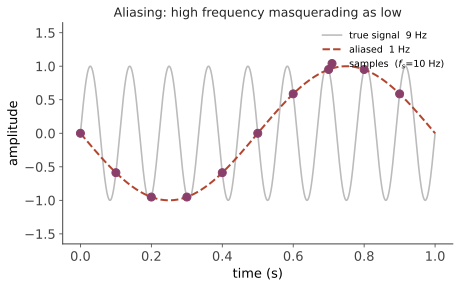

现代 IV · 数字控制与采样
层次：本科核心 + 业界必备 ｜ 🔗 与微电子站数据转换器（第九页）直接衔接。 前面九页的理论全是连续时间的，而今天几乎所有控制器都跑在计算机上：定时采样、计算、输出。这个"离散化"带来一批新问题，其中有些相当反直觉——最重要的一条是：采样本身会引入相位滞后，从而吃掉你辛苦挣来的稳定裕度。
一、采样与混叠
采样定理：要无失真重建带宽为 \(f_{max}\) 的信号，采样率须满足 \(f_s > 2f_{max}\)。
违反的后果是混叠：高频成分被"折叠"成低频假信号，且一旦混叠就无法在数字域分离。

控制系统中的实际危害：机械共振、电源纹波、变频器开关噪声等高频成分若被混叠成低频，控制器会去"纠正"一个虚假的扰动，造成实际振荡。
必须的措施：在 ADC 之前加模拟抗混叠低通滤波器。这一点无法用数字手段替代——信息在采样瞬间就已经丢失了。（🔗 微电子站第九页：ADC 前端设计的同一问题。）
代价：抗混叠滤波器本身引入相位滞后 → 又一次侵蚀稳定裕度。这是本页反复出现的主题。
二、采样引入的延迟：最重要的实践认识
零阶保持（ZOH）：DAC 在两次采样之间保持输出不变，形成阶梯波形。它对回路的影响可近似为半个采样周期的纯延迟：
加上计算延迟（读取采样、算完再输出，通常算作一个周期），总延迟约 \(0.5T\) 到 \(1.5T\)。
由第五页，延迟在穿越频率处引入相位滞后：
这是数字控制最关键的工程结论：采样周期直接消耗相位裕度。
经验准则：
- 采样率取闭环带宽的 10–30 倍（远高于奈奎斯特的 2 倍！）；
- 奈奎斯特只保证信号重建，而控制需要保证稳定裕度——后者要求严格得多；
- 若采样率只有带宽的 5 倍，相位损失可达 20°–30°，足以把一个设计良好的控制器推向振荡边缘。
这条经验是新手最常忽略、也最容易被现场教训的一条。
三、离散化方法
把连续控制器 \(C(s)\) 变成数字实现 \(C(z)\)：
| 方法 | 映射 | 特点 |
|---|---|---|
| 前向欧拉 | \(s \approx \dfrac{z-1}{T}\) | 最简单，可能把稳定系统变不稳定 |
| 后向欧拉 | \(s \approx \dfrac{z-1}{Tz}\) | 总是稳定，精度一般 |
| 双线性（Tustin） | \(s \approx \dfrac{2}{T}\dfrac{z-1}{z+1}\) | 最常用：保稳定性、精度好 |
| 零阶保持等价 | 精确匹配阶跃响应 | 对象离散化的标准方法 |
Tustin 的注意点：它会造成频率畸变（连续频率与离散频率非线性对应），在接近奈奎斯特频率处明显。若关心某个特定频率（如陷波器的中心频率），需用预畸变（pre-warping）校正。
一个实用建议：采样率足够高时，各种离散化方法差别不大；采样率偏低时才需要仔细选择。所以第一优先级是把采样率提上去，而非纠结离散化方法。
四、z 域中的稳定性
连续系统稳定 ⟺ 极点在左半平面；离散系统稳定 ⟺ 极点在单位圆内（\(|z|<1\)）。
映射关系 \(z = e^{sT}\)：
- 左半平面 → 单位圆内；
- 虚轴 → 单位圆；
- 实部越负（衰减越快）→ 越靠近原点；
- 采样频率的一半对应 \(z=-1\)（负实轴）。
一个容易误解的点：极点靠近原点意味着响应快（几拍就衰减完），但这也意味着控制器非常激进——每个采样周期都要产生大的控制作用。"死拍控制"（把所有极点配到原点）理论上有限拍收敛，实际上因控制量巨大且对模型误差极敏感而很少使用。
五、数字实现的其他现实问题
① 量化：
- ADC 量化：分辨率不足时形成"极限环"——系统在最小分辨率附近来回振荡，无法稳定在设定点；
- 控制器内部字长：定点实现中，系数量化会移动极点位置。高阶滤波器用直接型实现对系数误差极其敏感，工业上普遍改用二阶节级联（SOS）——这是数字信号处理与控制共享的实践智慧；
- 积分器的量化：小误差可能因量化而永远无法累积，导致静差消不掉。
② 抖动（jitter）：采样时刻不准。实时性差的系统（在通用操作系统上跑控制）会有明显抖动，等效于随机的时变延迟，直接伤害稳定裕度。这就是工业上使用实时操作系统或专用硬件（PLC、DSP、FPGA）的原因（第十三页）。
③ 任务调度与执行顺序：应当先输出、后计算（把上周期算好的结果在周期开始时立即输出），以减小延迟的抖动——输出延迟固定，比平均延迟更小但抖动大要好。这是嵌入式控制的标准实践。
④ 数值问题：定点 vs 浮点、溢出保护、积分器的饱和限幅（第六页的抗饱和在数字实现中同样必需）。
六、要点
- 混叠不可逆，必须在 ADC 前用模拟抗混叠滤波器；
- 采样引入约 \(0.5T\sim1.5T\) 的延迟，直接消耗相位裕度——这是数字控制第一要务；
- 采样率取带宽的 10–30 倍，远高于奈奎斯特要求；
- Tustin 是默认的离散化选择，必要时做频率预畸变；
- 稳定域从左半平面变为单位圆内；
- 量化、抖动、调度顺序是实现层面的真实问题，实时性保障是工业选用专用硬件的原因。
线二结束。下一线离开纯理论，走向硬件：控制器的输出最终要变成电流、力矩、流量。电力电子与电机——自动化的"肌肉"。